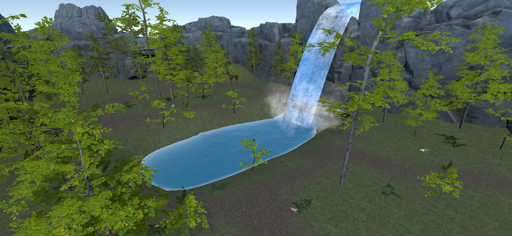
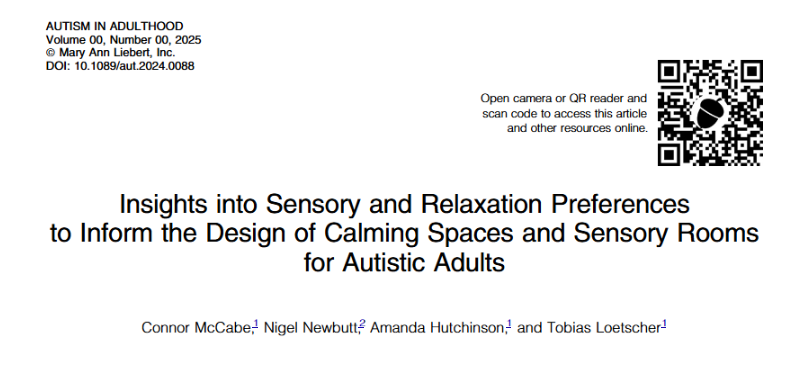

PhD Researcher
University of Adelaide
Hello, I'm
Connor McCabe
PhD Researcher focused on neurodivergence, co-design, and extended realities.
My expertise spans multiple domains, including psychology, human-computer interaction, and XR development. Currently, I'm researching and co-designing a Virtual Reality nature-based sensory experience with autistic adults. Explore my featured work below.
Featured Work

Co-designing A Customisable VR Sensory Room
Participatory research developing personalised virtual sensory environments with autistic adults.

Standalone VR Sensory Room Prototype
A portable Quest 3 implementation bringing customisable sensory experiences to an accessible platform.

Sensory and Relaxation Preferences for Autistic Adults
Insights to inform the design of calming spaces and sensory rooms. Published in Autism in Adulthood, 2025.